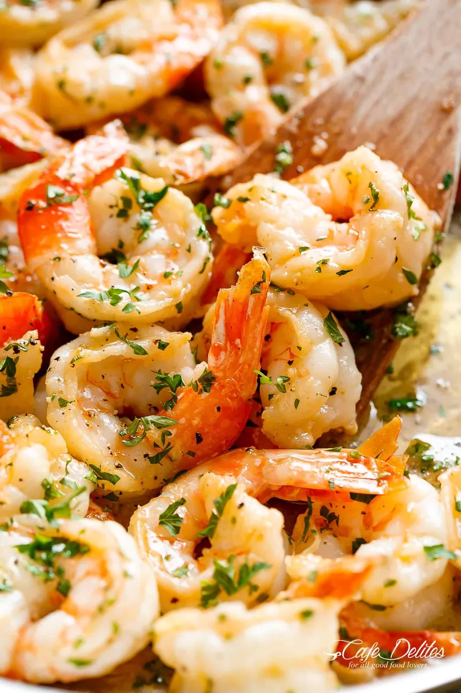

Home
Garlic Butter Shrimp

Description
This quick and easy garlic butter shrimp recipe is perfect for busy weeknights. The shrimp is sautéed in a rich garlic butter sauce with a splash of lemon and parsley.
Serve it over rice, pasta, or with a slice of crusty bread to soak up the sauce. It’s flavorful, fast, and satisfying!
Ingredients
- 1 pound (450g) large shrimp, peeled and deveined
- 2 tablespoons butter
- 1 tablespoon olive oil
- 4 cloves garlic, minced
- 1/4 teaspoon red pepper flakes (optional)
- Salt and pepper to taste
- Juice of 1/2 lemon
- 2 tablespoons fresh parsley, chopped
Steps
- Pat the shrimp dry with paper towels and season with salt and pepper.
- Heat butter and olive oil in a large skillet over medium heat until melted and bubbling.
- Add the minced garlic and red pepper flakes, and sauté for about 30 seconds, until fragrant.
- Add the shrimp in a single layer and cook for 2-3 minutes on one side.
- Flip the shrimp and cook for another 1-2 minutes, or until pink and opaque.
- Squeeze in the lemon juice and sprinkle with chopped parsley.
- Remove from heat and serve immediately with your favorite side.